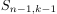

Rekursionsformel für die Stirling Zahl zweiter Art
1. Satz
 , dann gilt für die
, dann gilt für die 
2. Beweis
Kombinatorischer Beweis:
das zusätzliche Element ist entweder in einer einelementigen Menge – dies entspricht den  Möglichkeiten.
Ansonsten ist es in einer der  Mengen, die von einer der
Mengen, die von einer der  Möglickhkeiten festgelegt werdern
Möglickhkeiten festgelegt werdern